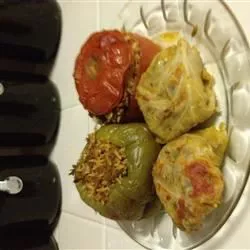

Combine ground beef, 2 1/2 cans of tomato paste, parsley, green onion, butter, salt, and pepper in a large bowl.
Before adding uncooked rice, rinse until water runs clear; this keeps the rice from becoming sticky. Add rice after rinsing and mix contents until blended well.
Bring a pot of lightly salted water to a boil; add cabbage. Boil until just tender enough to fold, 2 to 3 minutes. Drain and set aside.
Meanwhile, hollow out bell peppers, eggplants, and zucchini.
Stuff hollowed vegetables with meat mixture. Set in a large pot (pack vegetables together so there isn't much room in between them). Fill cabbage leaves with 3 to 4 tablespoons of leftover meat mixture and set in the pot with the other vegetables. Pour water in the pot on top of the vegetables until almost covered. Stir in remaining tomato paste. Weigh down the food by placing a heavy, heat-proof plate on top.
Bring water to a boil; reduce heat to medium and cover the pot. Let cook for 1 hour. Drain half of the water in the pot (leave heavy plate until done cooking) and recover, reducing heat to a simmer, and allow to slow cook for 1 hour more. Serve warm and enjoy!